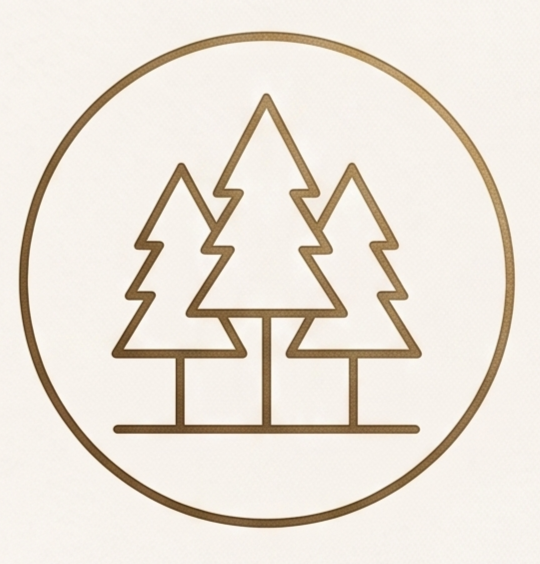
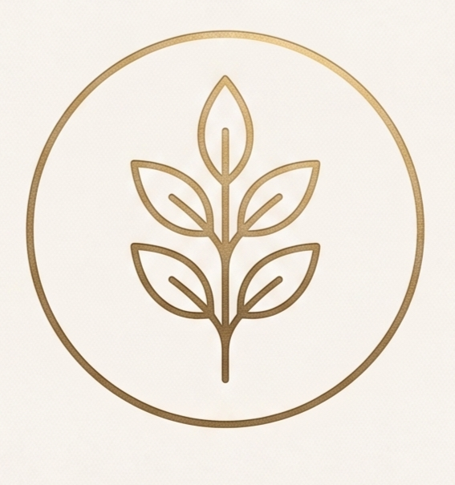
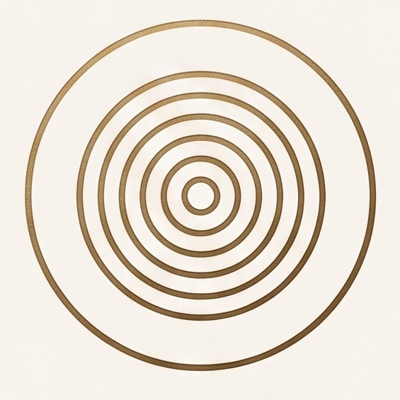

Gestión forestal, patrimonio
y sostenibilidad para las próximas
generaciones.

Protegemos y ponemos en valor
bosques que son legado natural,
cultural y familiar.

Aplicamos criterios técnicos y sostenibles
para garantizar la salud del bosque
y su
capacidad de renovarse.

Trabajamos con una mirada de futuro,
asegurando el equilibrio ecológico
y el valor del
patrimonio en el tiempo.
Cada decisión que tomamos hoy en el bosque,
es una oportunidad para dejar un legado
más fuerte,
más sano y más valioso.
Bosques Cantábricos es gestión forestal
con propósito: cuidar lo que importa,
para que siga
creciendo.